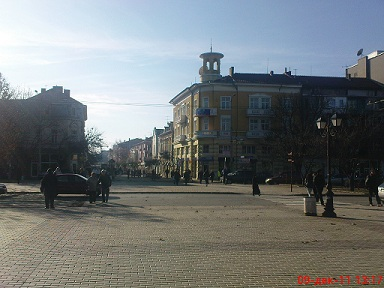

 Русе
{kind=link}
Русе e голям пристанищен град по поречието на река Дунав в Североизточна България. Той е административен и стопански център на едноименните община Русе и област Русе. Русе е сред най-важните икономически центрове на България и е петото по големина населено място в страната. В районa му се намира „Дунав мост“, наричан в миналото „Мост на дружбата“, което е единственото съоръжение от подобен тип в българо-румънския участък на река Дунав. Централната част на града е известна с уникалната си архитектура от края на XIX-ти и началото на ХХ-ти век. В старите сгради широко са застъпени стиловете барок, модерн, неокласицизъм и сецесион, а фасадите са украсени с еркери, балкони, колони, пиластри, арки, скулптурни фигури, бюстове, монограми и гербове. Покривите са от галванизирана цинкова или медна ламарина, завършващи с кулички, ветропоказатели, гръмоотводи и красиви парапети. Стилът на много от тях е повлиян от виенската архитектура. През 1893 г. Русенската община приема правилник за строежа на частни сгради. В него се нарежда всички къщи по главната градска улица да бъдат украсени с „пластическа каменна декорация“. Често наричан „Малката Виена“, Русе спечели почетна награда за най-красив град в България през 2009 г. Според преброяването през 2011 година град Русе има население от 149 642 жители и е 5-тият по големина град в България.
Русе се намира в най-източната част на крайдунавската низина и североизточно от устието на река Русенски Лом. Докато левият бряг на Дунав (от румънска страна) е нисък и мочурлив, то десният бряг край Русе е висок и сух. Има две заливни тераси и три надзаливни тераси — 15-22 м, 30-66 м и 54-65 м. Средната надморска височина на градската част е 45,5 м.Застроената част на Русе има формата на елипса по продължение на реката с обща дължина около 11 км. Градът обхваща територията между слетия със сушата остров Матей и устието на Русенски Лом от запад и до височината Сръбчето на изток. През 20 век западният край на града е променен значително — устието на Русенски Лом е коригирано и преместено на запад, а самият дунавски бряг и фарватер са преместени значително на север.Южно от града е разположен хълмът Саръбаир с връх Левента, висок 159 м. Върху него се намира най-високата телевизионна кула в България- 204 м с антената.
Със своите 26 163 жители, при първото преброяване на страната през 1880 година, Русе е най-голямото населено място в Княжество България. За сравнение тогава населението на София е 20 501 души. Тогавашния най-голям български град — Пловдив е извън пределите на княжеството в рамките на Източна Румелия. През последните две десетилетия градът запазва петото място в страната по броя на жителите си въпреки чувствителния демографски срив за този период.Долната таблица показва изменението на населението на града в периода от 1880 година до 2011 година.
| Русе | ||||||||||||||||
|---|---|---|---|---|---|---|---|---|---|---|---|---|---|---|---|---|
| Година | 1836 | 1880 | 1887 | 1910 | 1934 | 1946 | 1956 | 1965 | 1975 | 1985 | 1992 | 2001 | 2006 | 2008 | 2010 | 2011 |
| Население | 3000 | 26163 | 27194 | 36255 | 41447 | 57509 | 83453 | 128888 | 159578 | 183746 | 170038 | 161453 | 157540 | 156761 | 153723 | 149642 |
| Постоянен адрес | 190798 | 177104 | 175374 | 173205 | 172522 | |||||||||||
| Настоящ адрес | 179666 | 170208 | 168116 | 165208 | 164030 | |||||||||||